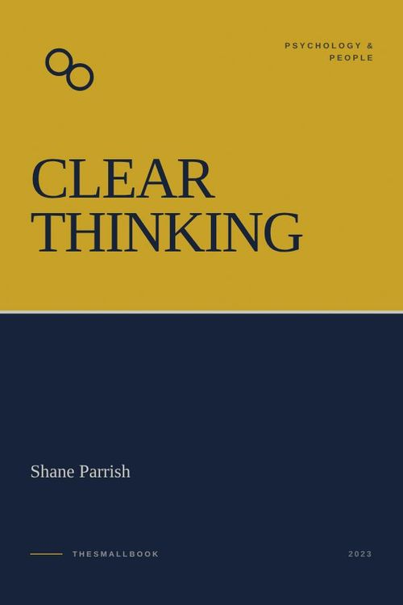

Library › Authors › Shane Parrish
Books by Shane Parrish
Shane Parrish has 2 books in the library. Every book here is read down to the big idea, the lessons, the lines worth keeping and the actions worth taking. Start with the summary, then buy the full book if it earns a place on your shelf.
The Great Mental Models, Volume 1
2019 · 11 min · 10 lessons
Mental models are the lenses the world's best thinkers use to see problems clearly. Learn a few big ones and you will make fewer avoidable mistakes.
A mental model is a simplified explanation of how something works. Everyone carries models in their head, but most of us rely on a few from our own field and try to solve every problem with them, like a person with only a hammer seeing nails everywhere. Shane Parrish and the Farnam Street team, inspired by Charlie Munger's idea of a latticework of models, collect the big ideas from many disciplines so readers can view problems from several angles. Volume 1 covers nine general thinking concepts: the map is not the...
Lessons in the summary
- Why Mental Models: The Latticework
- The Map Is Not the Territory
- Circle of Competence
- First Principles Thinking
- Thought Experiments
- Second-Order Thinking
- Probabilistic Thinking
- Inversion: Think Backward
- Occam's Razor: Prefer the Simpler Explanation
- Hanlon's Razor: Do Not Assume Malice
Lines worth keeping
- The map is not the territory.
- The quality of our thinking is proportional to the models in our head and their usefulness in the situation at hand.
- Avoiding stupidity is easier than seeking brilliance.

Clear Thinking
2023 · 11 min · 10 lessons
Good judgment is less about brilliant analysis and more about managing your defaults: emotion, ego, social pressure and inertia. Create space before you react.
Shane Parrish, founder of the Farnam Street blog, argues that the biggest gains in life come from ordinary moments when we react without thinking. Our biological defaults, emotion, ego, social conformity and inertia, push us into poor decisions. Clear thinking means creating space between stimulus and response so we can reason. The book offers practical strategies: build self-accountability, self-knowledge, self-control and self-confidence; set safeguards against weakness; and develop a decision process that...
Lessons in the summary
- Ordinary Moments Decide Your Life
- The Emotion Default
- The Ego Default
- The Social Default
- The Inertia Default
- Build Strength: Accountability and Self-Knowledge
- Safeguards Against Weakness
- Decide Well: Define the Problem
- Positioning: Avoid Bad Situations
- Define What Matters
Lines worth keeping
- The ability to think clearly is the ability to create space between a stimulus and your response.
- Positioning is the most important thing. Get in a good position and you will not need to be brilliant.
- Ordinary moments determine our future more than extraordinary ones.
Questions Shane Parrish helps answer
Read nearby authors next
- Devdutt Pattanaik 5 books
- Malcolm Gladwell 5 books
- A.P.J. Abdul Kalam 4 books
- Adam Grant 4 books
- Chip Heath & Dan Heath 4 books
- Daniel H. Pink 3 books
- Gurcharan Das 3 books
- Jonathan Haidt 3 books
Questions Shane Parrish helps answer
Where should I start with Shane Parrish? Start with The Great Mental Models, Volume 1: Mental models are the lenses the world's best thinkers use to see problems clearly. Learn a few big ones and you will make fewer avoidable mistakes.